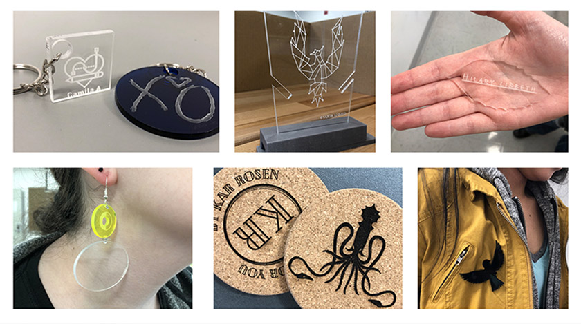

LaGuardia Community College
Program: Industrial Design
Degree: Associate of Applied Science
The Industrial Design program provides students a foundation experience in the necessary skills to begin a career in Computer Assisted Design (CAD), Model making, Product Design and Fabrication or transfer to a four-year institution.
View Program

LaGuardia Community College
Program: New Media technology
Degree: Associate of Applied Science
"The New Media Technology major offers students the opportunity to work and experiment with some of the exciting technologies available today.
Students develop a broad understanding of multimedia and Internet technologies in order to develop expertise in creating digital content."
View Program

Queensborough Community College
Program: Digital Art and Design
Degree: Associate of Science
The A.S. degree program in Digital Art and Design prepares students to enter the greatly expanding field of new media. In addition to four basic courses that provide a solid background in art, students take five courses in digital art and design, which develop computer skills for fine and applied arts.
View Program

Queens College
Program: Design
Degree: Bachelor of Fine Arts
Queens College’s Design program combines knowledgeable faculty with industry standard software and the creativity of a studio-based learning environment. Students choose one of three concentrations: Communication Design, Animation & Illustration or Interaction Design.
View Program

York College
Program: Communication Technology
Degree: Bachelor of Science
An interdisciplinary program that brings together television, web, information systems, computer science, and design. The program offers three main concentrations: digital video, computer graphics, and systems and applications.
View Program